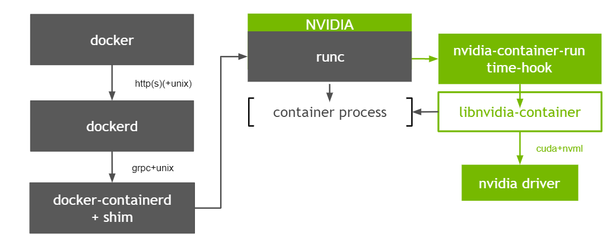

容器开启特权模式后无法通过cadvisor获取GPU metrics指标
问题描述
开启特权模式（--privileged）的容器，在使用nvidia GPU时，无法通过cAdvisor获取GPU相关的metrics信息。Google大法可以搜到相关的Issue，于2018年提出，至今仍处于Open状态（给cAdvisor贡献代码的机会），由于涉及到的内容较多，分为三篇来讲。
本篇为最后一篇，在看本篇之前建议先查看前两篇：
容器开启特权模式后无法通过cadvisor获取GPU metrics指标
容器开启特权模式后无法通过cadvisor获取GPU metrics指标
回顾
首先通过两种图回顾一下容器使用NVIDIA GPU的原理，如下
Kubelet & Device Plugin

Nvidia-container-runtime

解决方案
总结一下cAdvisor无法提供特权模式容器GPU指标的根本原因：
- cAdvisor作为一个偏底层的通用指标能力的提供者，为了与其他组件解耦，其从最底层device cgroup来获取容器绑定的GPU信息；
- containerd在创建容器时判断是否开启特权模式，是的话会为容器设置可以访问所有设备，即
a *:* rwm。
必要性
使用GPU时容器开启特权模式是一种趋势，简单说就是通过Env的方式传递GPU卡信息时，用户如果知道这个能力，则很容易就可以越过device-plugin在Pod spec中设置Env来实现使用GPU卡的目的，为了安全性，nvidia k8s-deivice-plugin提供了另一种实现方式，参考这里，新的方式是通过挂载卷的方式识别所需的GPU设备信息，必须开启特权模式。
虽然两种方式都可以实现容器内使用GPU设备的目的，但实现方式都不够优雅，根本原因还是缺少一个将第三方设备资源通知给container runtime的规范，社区也意识到了这个问题，提出了CDI规范，有关进展详见这里。在此规范的标准实现上线之前，随着越来越多的容器在使用GPU时开启特权模式，哪怕不那么优雅的方案也是有必要先实现的。
GPU设备表示方式
k8s-device-plugin支持两种GPU设备表示方式，通过deviceIDStrategyFlag参数设置：
- index
- uuid （默认）
如果以index方式设置，则可以直接在cAdvisor中获取index值，无需从device cgroup中获取，实现起来比较简单。下面的内容是针对以uuid方式设置时cAdvisor的处理逻辑。
GPU设备信息来源
Pod-Resource
Kubelet提供了pod-resource机制，对外提供rpc服务，供外部获取容器所需的资源信息。对Kubelet版本有一定的要求，且这种方式会把cAdvisor和Kubelet偶合在一起，不适合In-Tree方式，可以采取Out-Of-Tree的方式实现。
OCI spec
cAdvisor中本身已经缓存了容器OCI spec信息，可以从中获取绑定的GPU信息，优点是上层无感知，缺点是加重了cAdvisor的依赖，cAdvisor需要知道当前容器使用的GPU信息和当前节点上所有GPU信息。
k8s-device-plugin提供了两种方式设置当前容器使用的GPU设备信息：
- Env
- Volume Mount
在获取当前节点所有GPU信息之前有个基础知识点需要了解，即Mig Strategy。策略不同，最终获取到的节点的GPU设备信息不同。当前支持三种策略：
- None：不使用MIG能力
- Single：使用MIG能力，且各GPU实例被分为相同的规格的计算实例
- Mixed：使用MIG能力，GPU实例可以划分为任意规格的计算实例，或者直接使用整个GPU实例
剩下的工作就是实现不同机制下获取GPU设备信息的功能，可以参考k8s-device-plugin的实现，因为其本身在Allocate时必然涉及到相关能力。